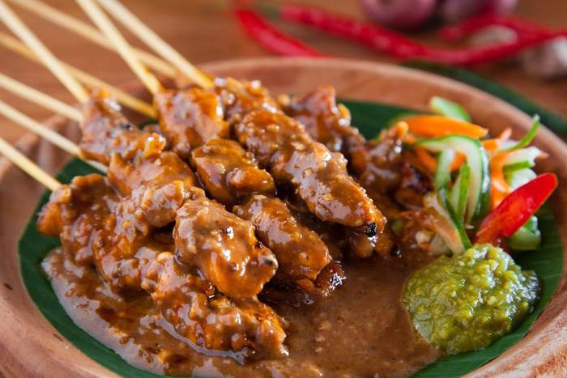

Hal ini dan catatan sejarah yang tersedia lainnya menunjukkan bahwa mungkin pada mulanya tempe diproduksi dari kedelai hitam, berasal dari masyarakat pedesaan tradisional Jawa—mungkin dikembangkan di daerah Mataram, Jawa Tengah, dan berkembang sebelum abad ke-16. Kata "tempe" berasal dari bahasa Jawa Kuno.
.jpeg)
Bubur ayam yang lembut lebih populer dinikmati untuk sarapan. Tetapi siapa sangka jika hidangan yang berasal dari China ini juga nikmat untuk makan malam. Bubur ayam seolah dikenal menjadi bagian budaya kuliner Indonesia.

Mengutip buku Pempek Palembang Makanan Tradisional dari Kota Palembang Provinsi Sumatera Selatan, pempek pertama kali ditemukan pada zaman Kerajaan Sriwijaya atau sekitar abad & Masehi. Hal ini dibuktikan dengan temuan Prasasti Talang Tuo yang menyatakan tanaman sagu sudah ada sejak abad ke-7.

Rumah Makan Padang mempopulerkan rendang ke seluruh penjuru Nusantara. Asal usul rendang ditelusuri berasal dari tanah Minangkabau, Sumatera Barat. Bagi masyarakat Minang, rendang sudah ada sejak dahulu dan telah menjadi masakan tradisi yang dihidangkan dalam berbagai acara adat dan hidangan keseharian.
Salah satu kuliner khas Indonesia yang berasal dari daerah Jawa Timur adalah sajian sate ayam. Sate ayam adalah olahan daging ayam yang ditusuk menggunakan tusukan dari batang bambu, kemudian diolah dengan cara dibakar, dan disajikan dengan berbagai bumbu berupa saus atau sambal.